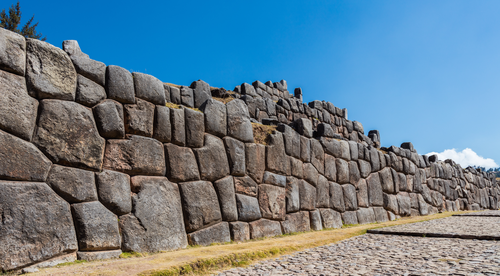

A working vocabulary of deep stone : : the words you need before you can compare the work the world's oldest builders actually did.
A megalith is not just a big stone. It is a deliberate act of engineering whose scale, joinery, finish, and placement force a question modern history is still working out how to answer. The vocabulary on this page is the difference between seeing a "big rock" and seeing a system. By the time you reach the bottom of this entry, the atlas reads differently. Sites you scrolled past begin to disclose themselves.
Six properties tend to repeat at the most demanding sites in the catalog. None of them is decoration. Each one is a question worth holding in mind while you read:
Read end to end, or follow any one thread down and back. The page is built so the parts also work in isolation.
Megalith comes from Greek: mega (great) and lithos (stone). The literal sense is just "big stone." The technical sense is narrower and more useful: a megalith is a stone, or a structure made from stones, large enough that its handling, shaping, and placement cannot be casually explained by ordinary human labor. Where casual ends and extraordinary begins is exactly where this lexicon lives.
Two further distinctions matter. A monolith is a single stone, worked or unworked, that stands alone or has been shaped from one piece. The Aswan Obelisk would have been a monolith. The Easter Island moai are monoliths. A megalithic structure is many large stones assembled into something, usually without mortar. Stonehenge is megalithic. The walls of Sacsayhuamán are megalithic. The Baalbek trilithon is both: three monoliths arranged into a megalithic foundation.
The third distinction is the one most readers miss. Mortarless does not mean unfinished or primitive. It means precise. Stones cut to fit each other directly, edge to edge, with tolerances often tighter than what modern masonry achieves with mortar to forgive the gaps. The skill is not in the size. The skill is in the joinery.
Each of these words names a specific phenomenon. Confusing them flattens the work. Distinguishing them sharpens what you notice.
"The skill is not in the size. The skill is in the joinery."
"Usually without mortar" is doing a lot of work in the definitions above. The honest answer is that the most demanding megalithic sites in the world were assembled dry: stone on stone, no binder, the geometry of the cut doing all the load transfer. The work survives 6,000 to 12,000 years of seismic stress because the joinery is the structural system. Mortar would have been a confession of imprecision. The builders did not confess.
The clearest test is the knife-blade test, and visitors at Sacsayhuamán, Ollantaytambo, and Cusco's downtown walls have been performing it for 500 years. A modern credit card cannot be inserted into the seams of the lower-course polygonal blocks. A piece of paper, in many places, gets you stopped a millimeter in.
And yet : : mortar does appear in the ancient record, just rarely at the demanding tier. The four cleanest examples:
What about Göbekli Tepe, the oldest megalithic site in the world? The T-pillars (~11,500 years old, some weighing 10–20 tons) are set into the bedrock and stabilized with compacted earth and small packing stones. No mortar. The technique is the same one used at Ollantaytambo eight thousand years later. Mortar is not what made megalithic construction durable. Geometry is.
A modern footnote worth keeping in mind. From 1923 to 1951, a 5-foot-tall Latvian immigrant named Edward Leedskalnin built Coral Castle in southern Florida — a complex of multi-ton coral-limestone megaliths, including a 9-ton swinging gate balanced so precisely it could be pushed with a finger. He worked alone, at night, with no power tools, no helpers, and no witnesses. He took his methods with him. The standing claim "we know how the ancients did it" has to share the floor with the standing fact that we don't actually know how Leedskalnin did it last century. The capacity to move stone without industrial equipment is not as lost as the textbooks assume.
Friedrich Mohs proposed his ten-point hardness scale in 1812. The scale is ordinal, not linear: a mineral scratches anything below it on the list, but the actual hardness gap between rungs widens dramatically at the top end. The visualization below makes the difference visible. The blue bar is the rank. The gold bar is the real-world scratch-resistance, measured against the same reference. Notice how the gap between 9 and 10 dwarfs the entire bottom half of the scale.
Most casual readers assume the ancients worked stone the way modern stonemasons do: slowly, with chisels, over years. That intuition works for limestone and sandstone, which are soft. It does not survive contact with granite, basalt, diorite, or quartzite. Those stones are roughly as hard as steel. Working them with copper or bronze tools should not produce the precision the surviving evidence shows, and yet the evidence shows it.
The atlas's most demanding sites work in stone above Mohs 6. The Aswan obelisks, the Ramesseum colossi, the Cusco lower courses, the Yangshan stele: all granite, andesite, or diorite. Once you know the hardness, the achievement gets harder to wave away as "just primitive labor scaled up." Time alone does not get a copper chisel through granite. Something else was happening, and the honest position is that we are still working out what.
This list ranks stones that were quarried, transported, and set in place. Stones that were started but never moved (the Yangshan stele in China at ~16,000 tons, the Stone of the South at Baalbek at ~1,650 tons) are noted as a separate category at the bottom: the things they almost did. The list is calibrated to what historians and engineers can defend, which means several long-circulating numbers (the Trilithon at "1,000 tons each," etc.) appear here at their more conservative estimates.
Two stones outrank everything above, but they never moved. The Stone of the South at Baalbek (Hajar al-Hibla, "the Stone of the Pregnant Woman") sits in the quarry still attached at one corner, weighing roughly 1,650 tons. A third Baalbek block found buried beneath it in 2014 may be even heavier, perhaps 1,800–2,000 tons. The Yangshan Stele in China was cut from solid bedrock as a single piece intended for the tomb of the Yongle Emperor (1402–1424 CE). It would have weighed roughly 16,250 tons. It was abandoned in place after the engineers concluded it could not be moved. Both are reminders that the upper limit of what ancient quarrymen attempted was much higher than the upper limit of what they actually transported.
The Baalbek trilithon (each block ~800 tons, placed at 22 meters above grade) sits right at the upper edge of what today's heaviest construction equipment can lift, and beyond what most projects ever attempt. The reference table below also makes the historical point: every machine in the modern column was introduced within the last 20 years. Before 2007, no crane in production could lift a Baalbek trilithon block. Before 2010, no production crawler could match what the Romans (or whoever built the foundation) did in stone at 22 meters.
The weight, on its own, is a problem. The weight plus the precision is the deeper one. Many of the largest blocks in the catalog were not just moved : : they were finished to fit their neighbors with tolerances tighter than modern industrial masonry achieves.
Three observations about the work pattern recur across the most demanding sites, and they sharpen the puzzle:
The paper test. At Sacsayhuamán, at Ollantaytambo, at the Twelve-Angled Stone in downtown Cusco, at Osaka Castle's main wall, at the Lower Tier of Karahan Tepe: a piece of paper, slid against the seam between two polygonal blocks, will not enter. Some sections refuse even a thinned razor blade. This is not figurative. It is the standard tourist demonstration. The stones meet each other directly, with no gap to plug.
Transported rough, finished in place. The most demanding Andean walls were not pre-cut to a final shape at the quarry and then assembled. The evidence (asymmetric block geometries, locally-customized joint geometry, in-situ tool marks on the contact faces) suggests the stones arrived rough, and the final shaping happened against the actual neighbors after delivery. Each face was cut to its specific partner, not to a generic plan. This is wildly more difficult than dry-stack assembly and changes what kind of process must be inferred.
The same signature appears at Giza. The lower courses of Khafre's pyramid and the surviving granite casing on Menkaure's are wrapped in rose granite quarried at the Aswan quarry, transported ~900 km down the Nile, and set against the pyramid core. The blocks have a characteristic cushioned, pillow-shaped outer face : : rounded, irregular, conspicuously not pre-cut to a uniform plan. The seams between them, however, are razor-tight, each one individually shaped to match its specific neighbor's curvature. The only way to produce that combination is to deliver rough blocks and finish the cushion face against the in-place neighbors. The same in-situ joinery method that produced the Cusco walls produced the granite casing at Giza, on a different continent, by a different culture, with no plausible mechanism of contact between them. The pattern is not regional. It is technological.
Rose-granite specifically. Many of the Andean polygonal foundation blocks are rose granite, Mohs 6–7, harder than the steel chisels we know the Inca did not have. Sacsayhuamán's largest stones are quarried from Rumiqolqa, several kilometers away across a valley. They were transported, shaped to fit unique adjacent geometry on site, and finished to paper tolerance. With copper-bronze tools and stone hammers, according to the official account. The granite at Khafre and Menkaure is the same material, finished with the same method, by a culture that supposedly never met the one in the Andes.
"Time alone does not get a copper chisel through granite. Something else was happening."
Plato proposed that ideal forms exist independently of their specific cultural expressions : : a triangle remains a triangle whether drawn in Athens or Cusco. The premise is hard to apply to most of human-made history, where local style and material dominate. It is unusually easy to apply to the megalithic wall. There is something like an ideal polygonal wall, an abstract form characterized by many-sided blocks meeting at custom-cut seams, mortarless, at scale. The expression of that form varies by culture, era, and material. The form itself recurs. Four cultures, on four continents, with no plausible mechanism of contact, built variants of the same wall.

Four cultures. Four materials. The same form. The dialects vary; the language does not.
One of the strongest reasons to read the atlas as a comparative instrument, not a list of curiosities, is that the same engineering signature appears in places that should have no contact with one another. Polygonal mortarless masonry, with stones cut to interlock against multiple neighbors at razor-tight seams, shows up in highland Peru, in Japan, in Bronze Age Anatolia, on Easter Island, and in fragments along the Mediterranean and the Black Sea. The cultures are unrelated. The technique is identical.
The conventional explanation is convergent evolution: independent cultures solving the same problem (mortarless durability under seismic stress) the same way. The skeptical reply is that convergent solutions usually carry visible regional fingerprints (different tool marks, different finish patterns, different geometric preferences) and these don't. Stones at Sacsayhuamán and stones at Osaka Castle, photographed without scale or caption, are easy to confuse.
The atlas presents the comparison and lets readers form their own view. The point of cataloging the same pattern across continents is not to claim a unified origin, only to refuse the easy story that each site is sui generis.
Peruvian researcher Alfredo Gamarra (1924–2010), working from a lifetime of fieldwork at the Andean megalithic sites, proposed that what is universally called "Inca architecture" is in fact three distinct construction technologies, layered on top of each other, separated by long gaps in time. The classification has been carried into the English-language literature by Brien Foerster, whose Hidden Inca Tours have walked it through Cusco, Saqsaywaman, Ollantaytambo, and Machu Picchu for two decades. This is one of the strongest reading instruments the atlas points to. Once you have it loaded, the foundations of half the catalog disclose themselves.
Gamarra named the three ages after the Quechua term Pacha, which means "world" or "epoch." Each names a different position relative to "the heaven":
A cross-section of any major Sacred Valley site. The Spanish layer fragments first under seismic load (dashed cracks). The Inca ashlar cracks but holds. The Uran Pacha polygonal courses and the Hanan Pacha molded bedrock have not been displaced in five hundred years of recorded earthquakes. The deeper you go, the more advanced the technology.
Foerster's key insight is structural, not interpretive: at every multi-period site in the Andes, the three layers always stack in the same order. Hanan Pacha at the bottom. Uran Pacha built on top of or around it. Ukun Pacha (Inca) on top of both. Spanish colonial work is the crudest layer on top of everything. The deeper you go, the more advanced the technology gets.
The earthquakes that periodically level Cusco provide the falsifiable test. When the Andes shake, the Spanish layer collapses. The Inca ashlar cracks. The Uran Pacha polygonal foundations and the Hanan Pacha bedrock remain untouched. This is not theoretical. It is what visitors have photographed after every major event for five centuries. The technology gets better as it gets older. That single observation is what makes the Gamarra-Foerster frame difficult to dismiss : : it provides a test that the conventional "all Inca" narrative cannot account for.
The diagnostic move is to walk Saqsaywaman, Ollantaytambo, or any major Sacred Valley site with the three-ages frame loaded. The shifts in stone size, finish, geometry, and weathering between layers will become obvious once you know to look. Reading the entire site as a single Inca construction misses what the Inca themselves seem to have understood: they were building Ukun Pacha on top of an existing Uran Pacha and Hanan Pacha that they had inherited and did not have the tools to replicate.
A note on terminology. The classical cosmological Pacha — Hanan Pacha as the upper world of sky and condor, Kay Pacha as the world of the living and puma, Uku Pacha as the underworld of ancestors and serpent — is a separate framework, used in living Andean spiritual practice. The two systems share vocabulary but classify different things: one organizes cosmos, the other organizes stone. Both are useful in the field. The deeper treatment of each lives in its own Library entry. This is the orientation.
The final dimension of megalithic precision is the one most often dismissed and the hardest to dismiss after sustained looking. The most demanding sites are not arbitrary stone. They encode geometric and astronomical relationships that show up too consistently to ignore : : ratios that recur, measurements that match Earth's own dimensions, and alignments that work as instruments for tracking solar, lunar, and stellar cycles.
The medieval Quadrivium named the four classical sciences of pattern: arithmetic, geometry, music, and astronomy. Pythagoras taught that all four were aspects of the same underlying order. The Quadrivium is not a fringe frame. It was the standard curriculum of the European university from Bede through Roger Bacon, and a version of it appears in every culture that built monumentally in stone. Reading the great sites through this lens is closer to reading them as they were designed than the modern habit of treating them as decorative.
The Great Pyramid at Giza is a single object that contains, at minimum, the following relationships, all encoded in its dimensions:
The hypothesis behind the official explanation is that these are coincidences, accumulated by trial and error over multiple iterations of pyramid design. The hypothesis behind the alternative reading is that they are not coincidences at all : : they are the design intent, executed by builders who understood the relationships even if they did not have our notation for them. The atlas does not adjudicate. It catalogs the work and lets readers do the reading.
Similar mathematics is encoded at other top-tier sites in the catalog. Stonehenge functions as a solar and lunar calendar, with stones aligned to summer and winter solstice sunrise and to the major and minor lunar standstills. The Cusco temple precinct is laid out as a stylized puma whose dimensions track astronomical events. Angkor Wat encodes the precession of the equinoxes in the spacing of its bridge causeways and the layout of its galleries. Newgrange in Ireland (~3,200 BCE, older than Stonehenge and Giza both) admits a single beam of sunrise light into its inner chamber for seventeen minutes on the winter solstice, and no other day. The same geometric vocabulary appears at very different sites built by very different cultures over six thousand years.
The most rigorous evidence for a shared geometric system comes from Scottish engineer Alexander Thom (1894–1985), who surveyed over 500 stone circles across Britain, Ireland, and France between 1957 and 1985. Working with the precision of a professional surveyor, Thom identified a unit of measurement that recurred across the sites at statistical significance no chance explanation could account for: 2.72 feet (0.829 meters). He called it the megalithic yard.
Roughly a third of Thom's surveyed "circles" were not actually circles. They were precise constructions of Pythagorean triangles laid out in whole numbers of megalithic yards, with the key intersection points marked by stones. The Le Menec alignment at Carnac is built on two back-to-back 3-4-5 triangles. Castlerigg in Cumbria is laid out around a similar geometry. Stonehenge's Sarsen Circle has the same diameter as the Rollright Stones in Oxfordshire to within a few inches, despite being separated by 80 miles and centuries.
The deeper question Thom's work raises is this: how did unrelated communities, spread across thousands of square miles of pre-literate Britain over 2,000+ years of construction activity, share a standard unit of measurement to within a tolerance most modern carpenters would accept? Either the megalithic yard was the natural output of a body-based metrology that converged independently across many sites (which is plausible but doesn't easily account for the precision), or there was a coordinated transmission of a shared standard. Thom himself favored the latter. His successors have not refuted him.
That recurrence is the deeper puzzle. Either the relationships are inherent to the cosmos and any sufficiently careful civilization will rediscover them (which is the position the Pythagoreans, the Vedic mathematicians, and the Maya astronomers all explicitly took), or there is a transmission record we haven't yet pieced together. Reading the Quadrivium back into the atlas makes both possibilities testable. It also makes the work feel less like architecture and more like instrumentation : : tools for thinking, built in stone because stone is what lasts.
The atlas is calibrated to reward attention. Each site card lists its category (megalithic, pyramid, temple, rock-cut, underground, city, tomb, settlement, geoglyph). Once you have the lexicon above, the categories stop being neutral labels and start being a question: which megalithic style does this site work in, what is the stone, how heavy are the blocks, and what frame is the most useful to read it through?
A few sharpened reading habits worth trying:
Look at the lowest course first. At many Andean and Mediterranean sites the largest, oldest, most precisely-fitted stones are at the bottom. The work above gets simpler, looser, and easier to date. Anything in the lower courses that contradicts the official date is the more interesting story.
Identify the stone by hardness, not appearance. A weathered surface looks soft. The unweathered interior is often Mohs 6 or higher. Look at the site's geology before you accept that "they just had a lot of time."
Notice the joint geometry. Polygonal joints with three or more neighbors per stone are evidence of design, not chance. The neighbor count is one of the clearest signals that you are looking at a deliberate engineering choice, not a pile.
Cross-reference the pattern. Use the search to find other sites where the same technique appears. The atlas is built to support this kind of comparative reading; it's the reason the catalog spans continents instead of focusing on one region.
Return to the map with the vocabulary loaded. Open the Atlas →
This list is the working bibliography behind the entry. Each entry in the Library will carry its own list. Suggest additions through the Contact form.